CHUDBI reúne contabilidad, CFDI 4.0, nómina 2026, bancos, inventarios, ventas e impuestos en un solo sistema.
Y suma a CHUDBOT: un asistente de IA que corre en tu propio equipo, cita la ley vigente y te pide
confirmación antes de modificar un solo dato.
Biblioteca normativa que CHUDBOT consulta y cita · 40 documentos
Código Fiscal de la FederaciónLey del ISRLey del IVALey del IEPSLey Federal del TrabajoLey del Seguro SocialLey del INFONAVITLey de Ingresos 2026Código de ComercioLey AduaneraReglamento del CFFReglamento de la LISRReglamento de la LIVAReglamento de la Ley Aduanera
RMF 20262.ª Modificación RMF 2026 · DOF 01-10-2026Anexo 20 · CFDI 4.0Anexo 24 · Contabilidad electrónicaAnexo 7 RMF 2026Anexo 3 RMF 2026Complemento de Pagos 2.0Nómina 1.2 rev. CCarta Porte 3.1Comercio Exterior 2.0Cancelación de CFDI 2026DIOT 2025Factura global 4.0Catálogo SAT
Debe ▲ Haber
Hace más de cinco mil años, la escritura nació para llevar cuentas. En 1494, Luca Pacioli enseñó al mundo que todo debe tiene su haber. Hoy esa sabiduría trabaja para tu negocio: números que cuadran, decisiones con claridad y una inteligencia que te acompaña en cada peso.
El sistema, por dentro
Once pantallas reales. Ni una maqueta.
Capturas del sistema funcionando con las empresas de demostración que trae precargadas.
Desplázate: cada paso es un módulo que ya existe y ya funciona.
01 · Administración
Dashboard de control ejecutivo
Facturación del mes, compras y gastos, margen operativo y valor de inventarios en una sola vista, con la bitácora de pólizas recientes y el estado de la empresa.
Tipo de cambio USD/MXN diario automático
Estado de la FIEL del SAT
Multiempresa: cambia de razón social en un clic
02 · Contabilidad y finanzas
Pólizas que se escriben solas, y cuadran
Ingresos, egresos y diario con partida doble validada en vivo. Facturas, bancos, nóminas y CFDI generan su póliza solos, sin registrar dos veces lo mismo.
Meses cerrados que nadie puede modificar
Depreciación fiscal · LISR arts. 31, 34 y 36
IVA en flujo de efectivo · LIVA art. 1-B
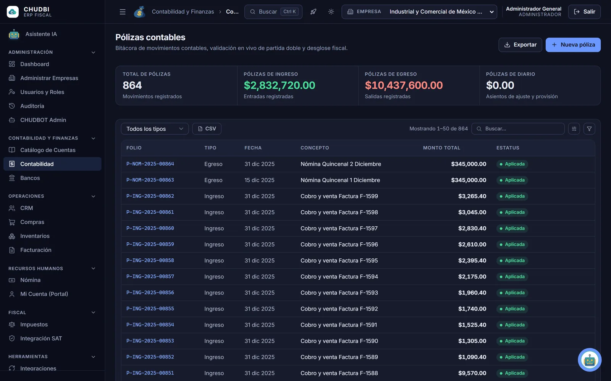
03 · Catálogo de cuentas
El código agrupador del SAT, completo
Catálogo jerárquico con naturaleza deudora o acreedora y el código agrupador del SAT en cada cuenta: la base de la contabilidad electrónica del Anexo 24.
1,076 cuentas del código agrupador
Naturaleza deudora y acreedora
Saldos por cuenta y subcuenta
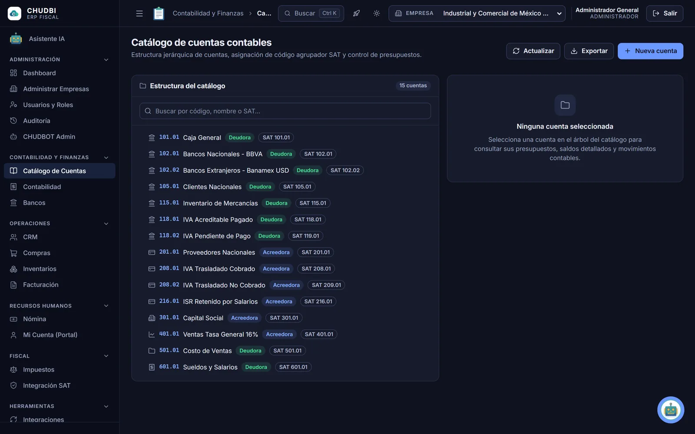
04 · Operaciones
Facturación electrónica CFDI 4.0
Timbrado con PAC certificado, descarga de XML y PDF, complemento de pagos y cancelación con los cuatro motivos vigentes (CFF art. 29-A y RMF 2026).
Timbrado asistido en el portal del SAT: el sistema nunca ve tu e.firma
Descarga masiva del SAT con FIEL
Importación y revisión de XML recibidos
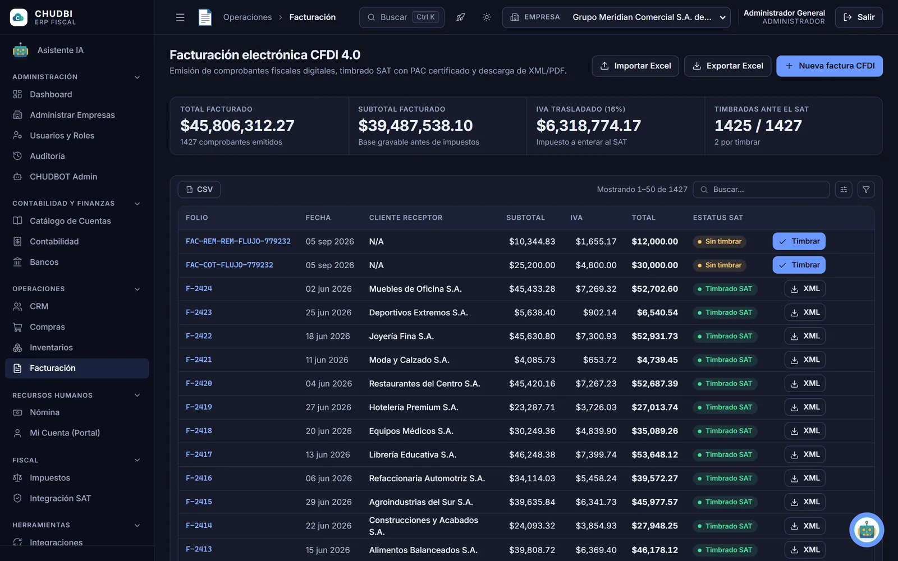
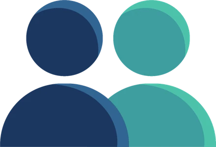
05 · Recursos humanos
Nómina mexicana con parámetros 2026
ISR con la tarifa del art. 96 (Anexo 8 RMF 2026), subsidio para el empleo y cuotas del IMSS. Periodos, incidencias, vacaciones y expediente digital.
UMA 2026: $117.31 diarios
Salario mínimo general: $315.04
Layouts SPEI y SUA · recibos CFDI de nómina 1.2
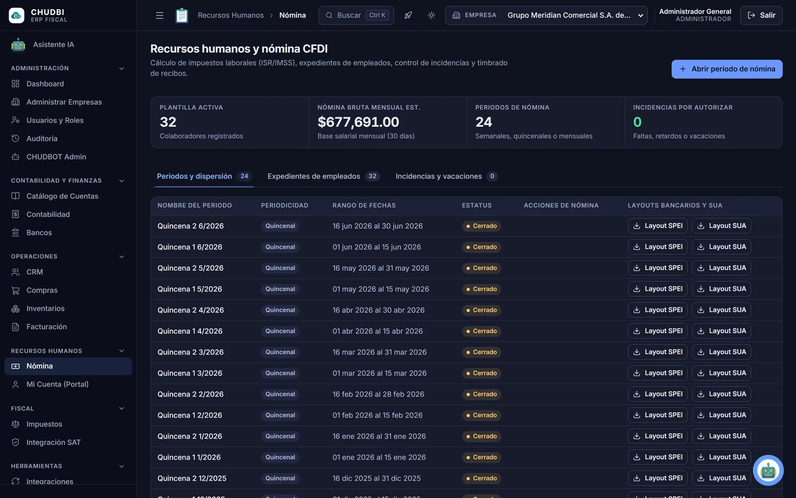
06 · Operaciones
CRM y ventas, de prospecto a factura
Embudo Kanban de arrastrar y soltar y el ciclo completo como documentos ligados: cotización, pedido, remisión y factura, sin recapturar.
Listas de precios y kits
Punto de venta (POS) con ticket imprimible
Cuentas por cobrar ligadas a pedidos y facturas
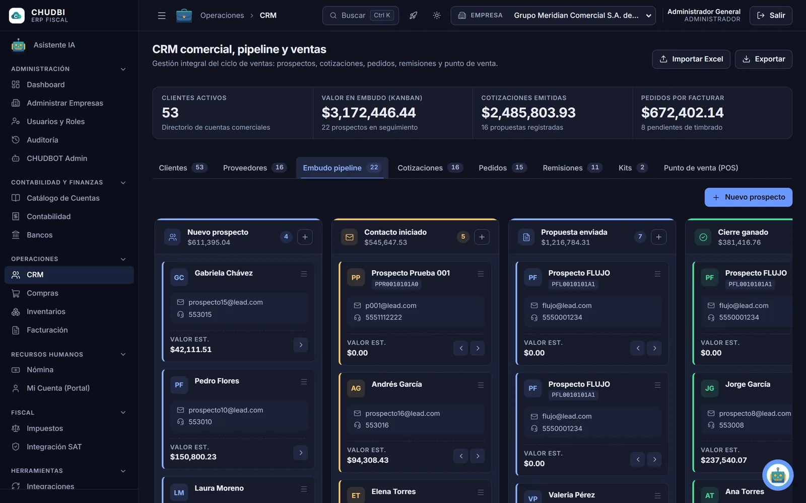
07 · Cadena de suministro
Compras e inventarios multialmacén
Requisiciones, concursos y órdenes de compra; existencias por almacén con kardex, valuación PEPS o promedio, lotes con caducidad y conteos físicos.
Alertas de stock bajo mínimo
Traspasos entre almacenes
Cuentas por pagar ligadas a órdenes de compra
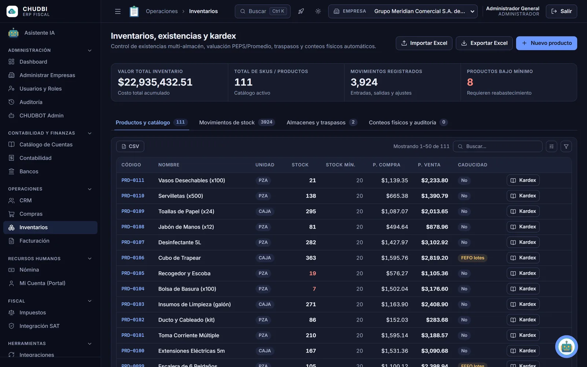
08 · Fiscal
Impuestos y retenciones, al día 17
Pagos provisionales de ISR, IVA e IEPS, retenciones y declaraciones con su vencimiento, más la integración con el SAT para importar y revisar tus CFDI.
Base gravable, tasa y saldo por pagar
Importación desde Excel
Validación de estructura CFDI 4.0
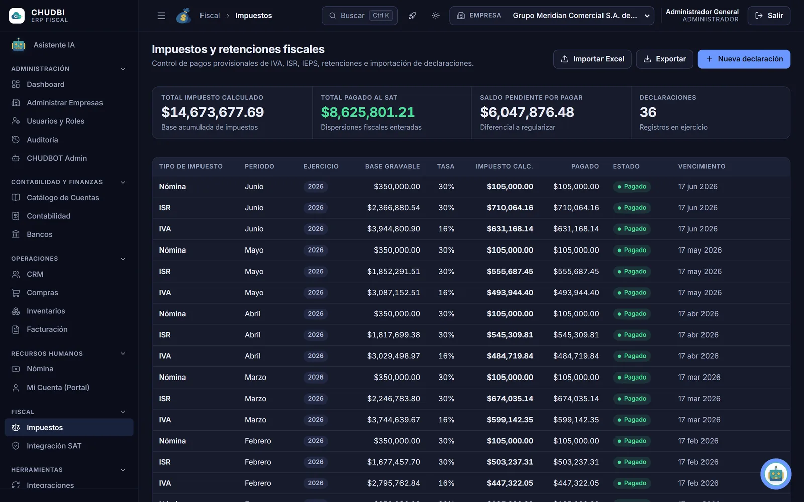
09 · Portales
Portales para empleados, proveedores y clientes
Cada empleado consulta sus recibos, vacaciones y expediente; los proveedores tienen su portal B2B y la mesa de ayuda sigue cada ticket con SLA.
Portal del empleado (Mi Cuenta)
Portal B2B de proveedores y licitaciones
Mesa de ayuda · tienda en línea B2C
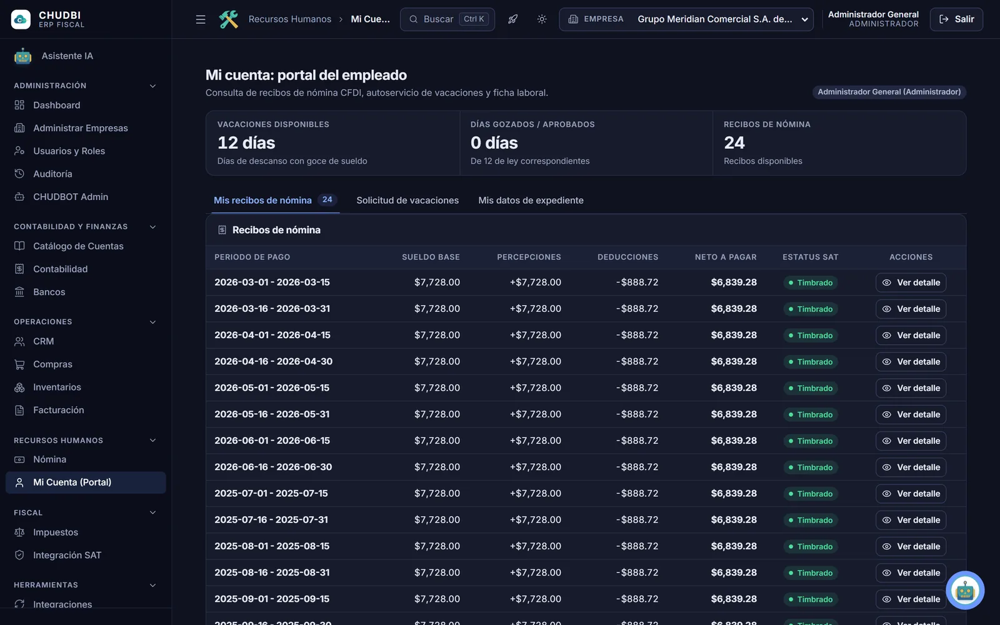
10 · Seguridad y control
Quién hizo qué, cuándo y desde dónde
Bitácora de cada operación, también las de la IA, con usuario, módulo, IP y ubicación, más el historial de cambios campo por campo.
Verificación en dos pasos y permisos por rol
Sesiones activas e intentos de acceso
Bloqueo ante intentos masivos de acceso
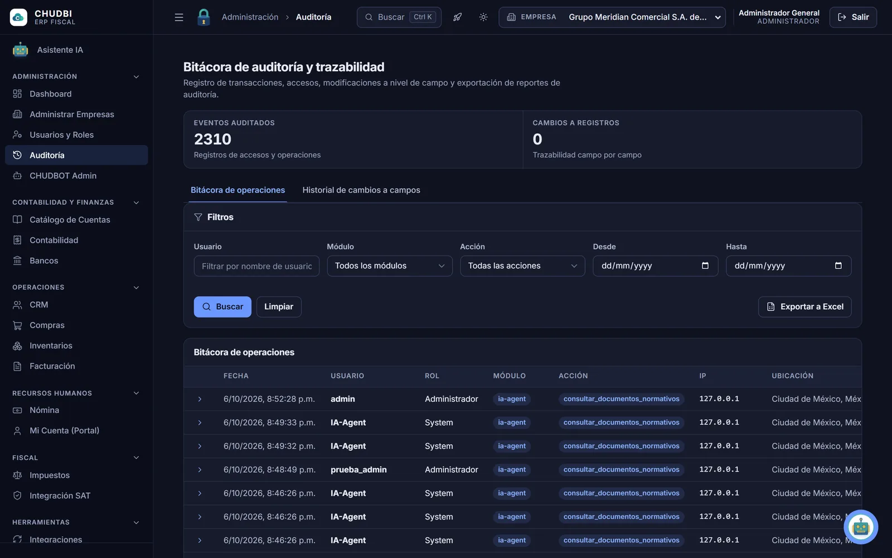
11 · Productividad
Todo a un Ctrl + K de distancia
Búsqueda global en facturas, clientes, proveedores, pólizas, inventario y nómina. Plantillas que generan pólizas por módulo, e importación y exportación con Excel.
Procesa lotes de XML CFDI en pólizas
Exporta a Excel y PDF
Modo claro y oscuro
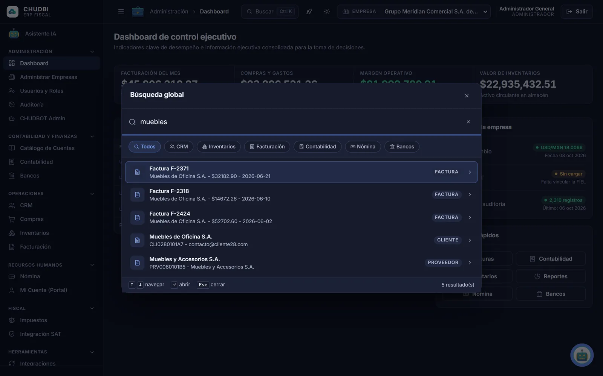
01 / 11Administración
chudbi
Todo en un lugar
24 módulos. Un solo sistema.
Todo está conectado: lo que factura Ventas lo ve Contabilidad, lo que paga Nómina lo concilia Bancos.
5 módulos
Administración
Dashboard
Administrar empresas
Usuarios y roles
Auditoría
CHUDBOT Admin
3 módulos
Contabilidad y finanzas
Catálogo de cuentas
Contabilidad
Bancos y conciliación
4 módulos
Operaciones
CRM
Compras
Inventarios
Facturación
2 módulos
Recursos humanos
Nómina
Mi Cuenta (portal del empleado)
2 módulos
Fiscal
Impuestos
Integración SAT
4 módulos
Herramientas
Integraciones
Plantillas inteligentes
Reportes y BI
Descargas
3 módulos
Portales y eCommerce
Tienda B2C
Portal B2B de proveedores
Mesa de ayuda
1 módulo · en todas las pantallas
Inteligencia artificial
Asistente IA CHUDBOT
Disponible en cada pantalla del sistema
CHUDBOT · Asistente de IA local
Pregúntale a tu contabilidad. Te responde con la ley en la mano.
CHUDBOT entiende español, consulta tu información, busca en 40 documentos normativos y nunca crea ni
modifica nada sin que lo confirmes.
CHUDBOTMotor de IA local
IA local
Escribe tu pregunta o adjunta un archivo…↵
Animación ilustrativa con preguntas de nuestras pruebas internas.
Privada por diseño
Tu IA, en tu oficina
CHUDBOT corre en una computadora de tu empresa. Lo que le preguntas y la contabilidad que consulta no se envían a servicios de inteligencia artificial externos.
Acciones disponibles
36
Consulta saldos, facturas, clientes, inventario, pólizas y nómina, y registra movimientos por ti.
Siempre con tu permiso
20
de esas acciones crean o modifican datos y te piden confirmación antes de ejecutarse.
Biblioteca normativa
40 documentos
Leyes, reglamentos, RMF 2026 y guías del SAT, en 22,232 fragmentos para llegar al artículo exacto.
Casos contables y fiscales
7 de 8 correctos
En nuestras pruebas internas con respuesta verificable, como honorarios con retenciones.
Lee tus archivos
PDFWordExcelPowerPointCSVXML de facturasImágenes
Hasta 20 MB. Si adjuntas una factura, CHUDBOT te ofrece registrarla, dar de alta al proveedor o crear la póliza.
Equipo recomendado para CHUDBOT
Una computadora con tarjeta gráfica NVIDIA de 8 GB y 16 GB de RAM, como la de nuestras pruebas. El resto del sistema se usa desde el navegador.
Cómo encuentra el artículo exacto
1Preguntasen español, como se lo dirías a tu contador
2Entiende el temabusca por el sentido, no por palabras sueltas
3Busca en la leyentre 22,232 fragmentos de 40 documentos
4Lee el contextorevisa la sección completa del artículo
5Responde y citacon la fuente para que la verifiques
Modo claro y oscuro
Grafito de día. Medianoche de noche.
Trabaja con el tema claro de día y el oscuro de noche: las 24 pantallas están diseñadas para ambos. Desliza o arrastra para comparar.
MedianocheGrafito
‹ ›
Control y privacidad
Tus datos en tu oficina. Tus reglas en cada acceso.
Tu equipo de trabajo
Cada quien, lo suyo
Usuario propio, verificación en dos pasos y solo los permisos de su rol.
CHUDBI
Un solo sistema
24 módulos conectados: lo que se captura una vez sirve en ventas, contabilidad, bancos y nómina.
Tu información
Con historial completo
Bitácora de cada cambio con usuario, fecha e IP, y meses cerrados que nadie puede modificar.
CHUDBOT
IA en tu equipo
Responde desde una computadora de tu oficina y nunca modifica nada sin tu confirmación.
SAT y PAC
Cumplimiento fiscal
Timbrado con PAC certificado, descarga masiva con tu FIEL y consulta del estatus de tus CFDI.
En cifras
Nada de “más de”. Contamos cada uno.
24
módulos en un solo sistema
40
leyes, reglamentos y guías del SAT que CHUDBOT consulta
22,232
fragmentos normativos para citar el artículo exacto
1,076
cuentas del código agrupador del SAT
36
acciones que CHUDBOT puede hacer por ti
20
acciones que siempre piden tu confirmación
Cifras del sistema al 8 de octubre de 2026.
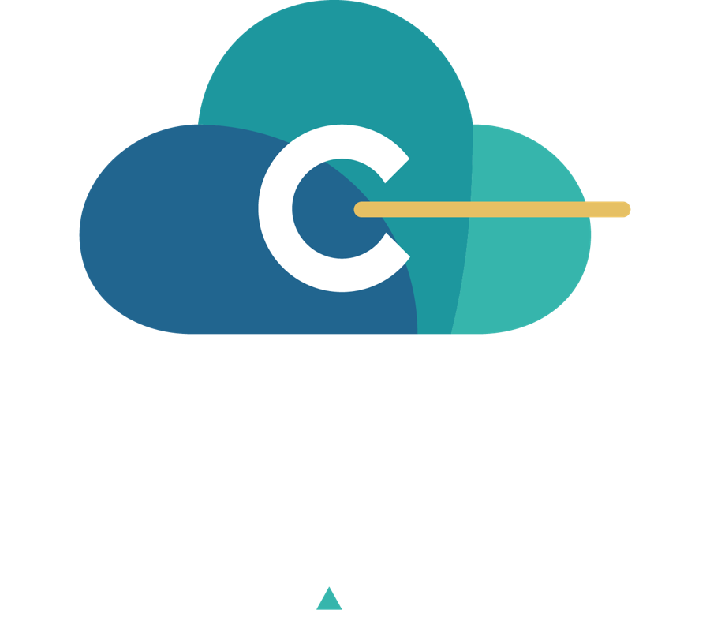
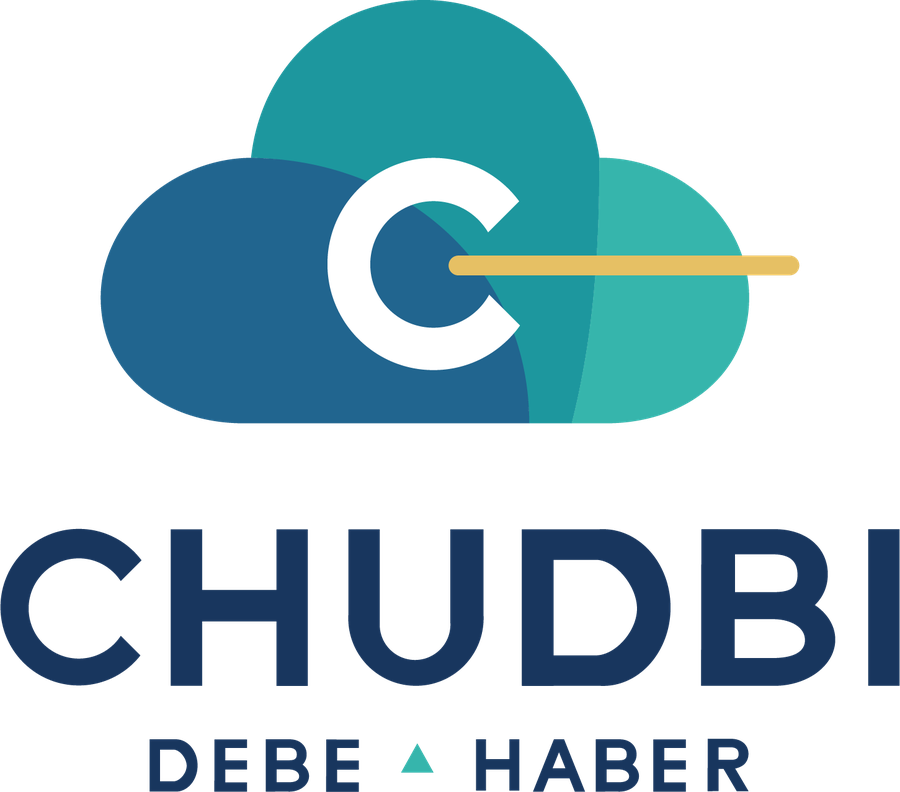
Hecho en México
Diseñado en México, para la ley mexicana.
RMF 2026 con su segunda modificación del 1 de octubre, ya indexada
CFDI 4.0, complemento de Pagos 2.0 y Nómina 1.2
Parámetros de nómina 2026: UMA, salario mínimo y subsidio al empleo
Hablemos
Ve CHUDBI funcionando con tus propios números.
Déjanos tus datos y te contactamos para una demostración del sistema y de CHUDBOT corriendo en local.
Multiempresa desde el primer día
Asistente de primer arranque para configurar tu empresa